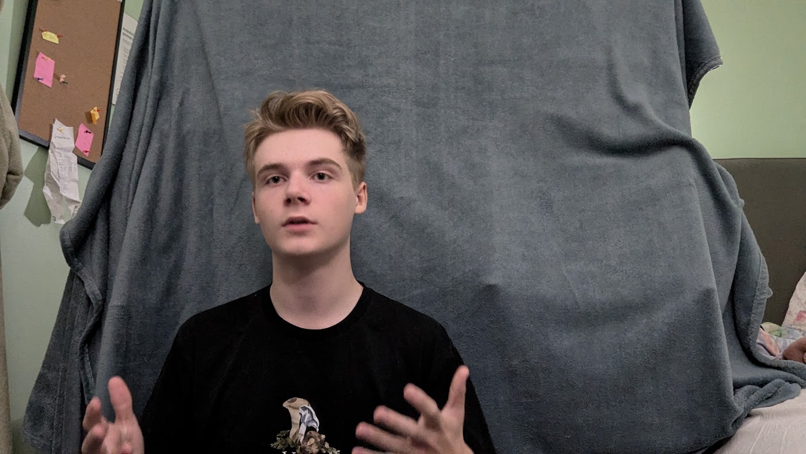

Live

Ulf Kristersson överväger att rösta vänster Ulf Kristersson överväger att rösta vänster Ulf Kristersson överväger att rösta vänster
Efter att ha infört mycket vänsterpolitik, som att begränsa vinster i friskolor och sänka priset på lokaltrafik, överväger statsminister Ulf Kristersson (M) att rösta på Vänsterpartiet, enligt ett uttalande på hans podd. Löken frågade efter en kommentar och statsministern svarade följande: "Jag har börjat läsa Marx manifest, och det är faktiskt en väldigt intressant bok, den kanske till och med kan komma att ersätta Det sovande folket i min bokhylla. Svenskarna är kanske inte helt mentalt handikappade eller indoktrinerade". När Löken frågade varför han trodde det från första början svarade han dock på tyska, vilket Lökens reporter har svårt att förstå. Nooshi (V) verkar dock inte så hedrad. I en intervju med Lökens reporter kommenterar hon på händelsen: "Kristersson har ju gått och blivit en rabiat kommunist, han förtjänar inte att vara med under vår vackra röda fana". Det ryktas även om att Jimmie Åkesson (SD) deltog på Röd Front under första maj, en kommunistisk demonstration. Under demonstrationen ska bland annat ha ropat slagord om "Ner med NATO" och "Deportera Jimmie, inte tonåringarna". Men Liberalerna ska som vanligt vara värst. Enligt Simona Mohamsson (L) så är även de ett väldigt extremt parti, men inte på den vanliga vänster-höger skalan utan på den vertikala skalan där de är i det absoluta bottenskrapet med noll mandat. Vem vet, Moderaterna kommer kanske att hinna införa en hårdare subventionerad russinpolitik innan valet?